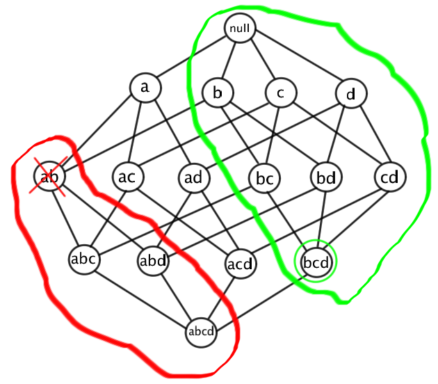

Association analysis is the task of identifying attributes that have strong connections. There are two primary steps that are required in the association analysis set of tasks. The first step is frequent itemset generation. Frequent itemsets are all the itemsets that represent attributes that occur together often. The second step is rule generation. Rules are generated from the frequent itemsets, and checked to see if the rule occurs often enough to be an association.
When creating frequent itemsets, the first question that needs asked is what we mean by frequent. The metric generally used in itemset generation is called support. Support, very simply, is the percent of records that have every attribute in the itemset present. Generally a threshold is set that an itemset has to be above before it is considered frequent and can be used to generate larger itemsets or rules.
Unfortunately, the number of possible itemsets can be quite large. With n binary attributes, the number of possible itemsets is 2n. That means that for the most part we don't want to check every possible itemset to see if it's frequent. Fortunately, the a priori principle helps us eliminate some things we would otherwise have to test. This principle states that once you've found an itemset to be infrequent, all supersets of that itemset are also infrequent. Similarly, once you've found an itemset to be frequent, all subsets of that itemset are also frequent. Shown below is an image depicting this principle. In red, an itemset is shown to be infrequent, in green an itemset is shown to be frequent.

This still doesn't give us a way of generating itemsets that doesn't involve every possible itemset. To generate a list of potentially frequent Kn itemsets, there are several methods we can use. First, we can take a cross-product of the sets K1 and Kn-1 frequent itemsets. Another method is to combine Kn-1 with Kn-1 itemsets. Note that we're only going to use frequent itemsets, because if an itemset is infrequent, then we know it's supersets are also infrequent due to a priori. After we generate the list of possible itemsets, we can then test them against the support threshold previously mentioned.
Now that we've generated a list of all the frequent itemsets, we can begin creating rules. Each itemset can potentially create 2k-2 rules, where k is the number of items in the itemset. This equation can be easily understood if you imagine that each item can be in one of two positions in the rule, the antecedent and the consequent. However, there must always be at least one item in both so we can eliminate the two cases where all items are in one or the other.
As we're generating rules, we need a metric to test whether or not these rules are accurate for our dataset. There are two main metrics used in rule generation. Confidence is the support of the union of the antecedent and the consequent divided by the support of the antecedent. Conceptually, it's very similar to Bayes' Theorem and conditional probability. Lift is similar to confidence, except it's divided by the support of the antecedent multiplied by the support of the consequent.
Finally, we have some rules that meet our threshold of confidence and/or lift. These rules indicate which attributes have a strong association with each other. A rule of the form a->b indicates that when a is present, b is usually also present.